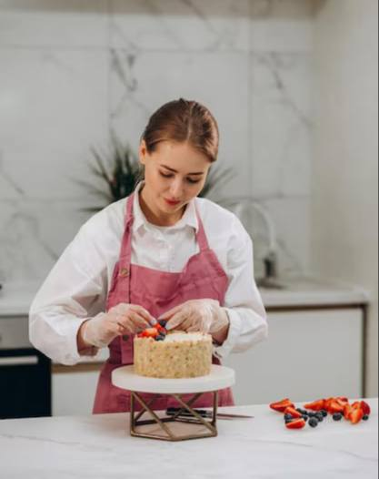

Baked With Love, Daily
Bakery Shop began its journey in a humble, tiny home kitchen equipped with nothing more than a single oven, a single whisk, and a steadfast belief that desserts should taste genuinely like they were made just for you.
Over time, Quality and freshness stand at the heart of their daily routine, as they use real butter, fresh cream, and fruit sourced directly from the local market. They maintain a strict daily baking philosophy—never baking more than what can be finished by hand that very same morning—ensuring that if a treat isn't sold by the end of the day, it never makes its way onto the shelf the next morning. Backed by 12 years of baking experience, over 40 distinct cake designs, and a 100% scratch-made promise, the bakery balances a handcrafted, artisanal touch with a commitment to wholesome, fresh ingredients.
- 12
- Years baking
- 40+
- Cake designs
- 100%
- Made from scratch